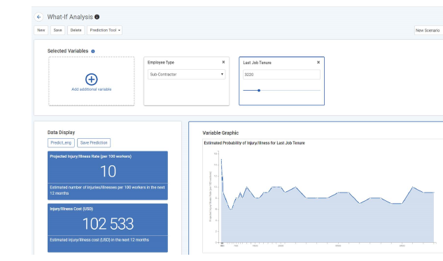
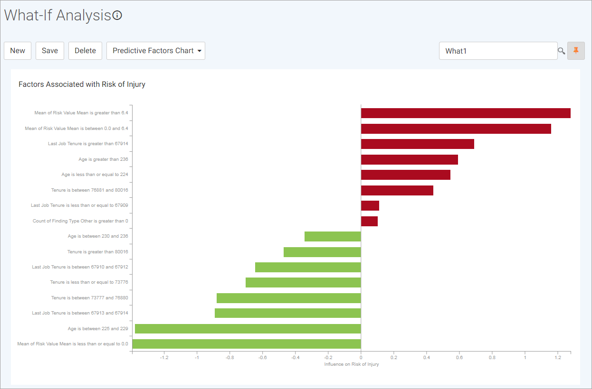

in the top right of the Injury/Illness Cost card to change the cost and/or currency used. These values are used for all subsequent calculations until they are changed again.
in the top right of the Injury/Illness Cost card to change the cost and/or currency used. These values are used for all subsequent calculations until they are changed again.
The What-If Analysis module provides a hypothetical scenario of an employee’s probability of injury/illness over the next 12 months. It helps you to understand how applicable variables influence the estimate, and to determine steps that should be taken to mitigate the employee’s risk of injury/illness.
This module expresses the prediction as an estimated number of injuries/illnesses which is then multiplied by the mean cost per instance to determine the approximate cost associated with those absences. The default cost per instance used in calculations is $33,800USD, but you can click the in the top right of the Injury/Illness Cost card to change the cost and/or currency used. These values are used for all subsequent calculations until they are changed again.
You can create and save multiple scenarios, with different variable fields or with the same fields but different values. The list of fields includes only those that have statistically significant relationships with the likelihood of injury/illness in the next 12 months.
In the Analytics menu, click What-If Analysis.
Retrieve a previously-saved scenario, or click New to create a new one.
Click to select the variables (fields) that should be factored into the estimate. The variables are ranked by importance to help you identify the most impactful variables: a lower number is more important than a higher number.
Variables added to the scenario are displayed left-to-right first, and then top-to-bottom; the latest variable added is always the top-left variable.
For each variable selected, select (or enter) the value. For numeric variables, you can either enter the value in the space provided, or use the slider to select from a range of predefined values.
When you have defined all the variable fields and values required, click Predict. The probability of an injury/illness occurring in the next 12 months is calculated and displayed on the lower left side.

Click Save Prediction to save the prediction for use in the Query Builder/Report Writer. This button will be disabled if you have already saved an identical prediction on the same day.
Click one of the selected variables to view a graph of the estimated probability of injury/illness for that variable.
To view the impact various factors have on an employee’s risk of injury/illness, click the Predictive Tool toggle to choose the Predictive Factors Chart. This chart displays the factors associated with risk of injury/illness across the entire organization: the greater the influence, the more strongly a factor is associated with workers who get injured; the smaller the influence, the more strongly a factor is associated with workers who do not get injured.
Click the Predictive Factors Chart toggle to return to the Predictive Tool view.

Optionally, change the variable fields and click Predict to see any change.
If you want to save the current set of variable fields and values, enter a name for the scenario and click Save.